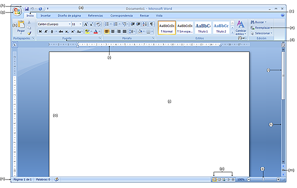
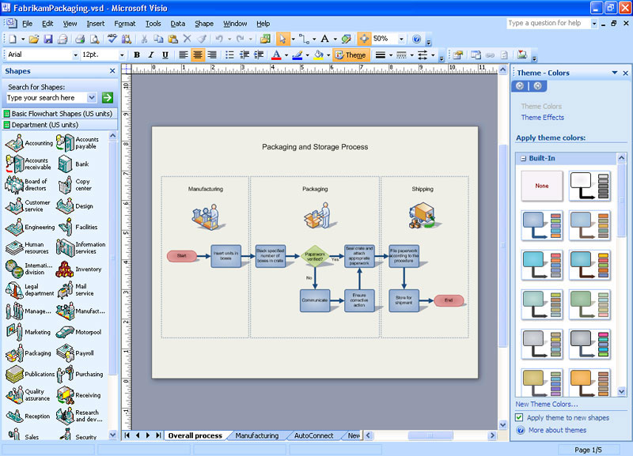

Resumen
Se realizo la investigación de 4 temas estos siendo contribuciones estatales, cobro y facturación, parcialidades y derechos de cooperación. De estos temas se realizó un documento tipo Word que incluyera, un marco legal, introducción, documentación requerida y diagramas de flujo de diversas acciones que se realizan dependiendo del tema que se este investigando. Se nos dio la tarea de realizar una revisión de los diagramas de flujo que otro equipo realizo, corrigiéndolos y realizarlos en un programa con el nombre de Visio. Los demás requisitos se realizó una investigación del tema en la ley de hacienda de Tamaulipas donde se capturaba la información relevante para que fuera incluida al documento cual se realizó exclusivamente en Microsoft Word. Los resultados fueron satisfactorios para el asesor empresarial que acepto los documentados realizados
Introducción
An investigation was made about 4 topics those being state contributions, charge and billing, partialities and rights of cooperation. Of those topics an Word document was made that incluided, legal framework, introduction, documentation needed and flowcharts of diverse actions that are done depending of the topic that is being investigated. The task of checking the flowcharts was given to us because the flowcharts were made by another team fixing them and making them in an program called Visio. The other requirements an investigation was made of law of hacienda of Tamaulipas were relevant information was included to the document that was made exclusively in Microsoft Word. The results were satisfactory for the business assessor that accepted the documents that were made
Marco teórico
Word para Windows está disponible de forma independiente o como parte de la suite Microsoft Office. Word contiene capacidades de publicación de escritorio rudimentarias y es el programa de procesamiento de texto más utilizado en el mercado. Los archivos de Word se usan comúnmente como formato para enviar documentos de texto por correo electrónico porque casi todos los usuarios con una computadora pueden leer un documento de Word mediante la aplicación de Word, un visor de Word o un procesador de texto que importa el formato de Word en la figura 1 se puede apreciar una imagen de la versión 2007 (Ericson, 2006) 
Microsoft puso a disposición Visio 2013 para Windows en dos ediciones: Standard y Professional. Las ediciones Standard y Professional comparten la misma interfaz, pero la edición Professional tiene plantillas adicionales para diagramas y diseños más avanzados, así como capacidades destinadas a facilitar a los usuarios conectar sus diagramas a las fuentes de datos y mostrar sus datos gráficamente. (Microsoft, 2016)

Objetivos
Se realizará la documentación de las leyes que afecten las acciones que se desean realizar además de revisar estas leyes para ver los requisitos, capturar la información de documentación requiera para facilitar el acceso a la información y revisarla en el documento fácilmente. Además de la elaboración de diagramas de flujo para las acciones que se tengan pensadas del tema.
Desarrollo del proyecto
A cada uno de los que tuvimos el interés de unirse a este departamento en las estancias se nos organizó en 4 equipos donde el tamaño variaba. Se dio un tema a cada equipo y se proporcionó un documento ya realizado para basarse en ese para realizar el documento que se entregaría. Después de revisar y realizar el documento el cual sea considerado satisfactorio, el asesor tenía personal para revisar el trabajo de cada equipo a cuáles podíamos hacer preguntas si considerábamos necesario. Este personal diría si el documento era entregable o no, si no es entregable estos nos explicarían porque y las correcciones que se deberían hacer para poder realizar que este documento sea entregable, además de dar sugerencias para mejorar el documento, si el documento era entregable estos nos darían otro tema para trabajarlo y cada fin de semana o inicio de semana nos juntaban para realizar una revisión de nuestro documento al no haber fallos se habla del siguiente documento a realizar. El equipo se organizó de manera que cada integrante tenía mínimo 2 tareas de su propia elección. La semana 1 se revisó el marco legal cual se anotaban leyes de relevancia de estos pertenecen los art. 45 al 54 de ley de hacienda. Se dio un formato para los diagramas de flujo. Se pidió un glosario del tema que se realizó. También hubo un avance de diagramas. La semana 2 se revisó el marco legal sobre el nuevo tema de parcialidades con su documentación, la investigación del articulo 18-A además de elaboración de diagramas nombrados “Nuevo convenio”, “Baja de convenio”, “Cobro de parcialidad”. La semana 3 Se investigo el marco legal de derecho de cooperación la investigación y elaborar un glosario del tema La semana 4: Elaboración de una presentación para el asesor empresarial la presentación fue realizada en el palacio de gobierno donde se revisó el trabajo que los equipos habían realizado con diapositivas el asesor empresarial dio su opinión acerca del trabajo y se siguió trabajando en diagramas de flujo La semana 5 Realización de diagramas de flujo de cobranza y ejecución con revisión de marco legal y elaboración de subprocesos. Se proporciono a cada equipo un lugar en la oficina y a cada integrante se proporcionó un cubículo para poder realizar las actividades, también fue proporcionada conexión a internet no se nos proporcionó equipos computacionales fuimos esperados que todos tuviéramos laptop que afortunadamente todos los integrantes de todos los equipos tenían disponibles. El documento fue medido a base de otros documentos que el asesor ya tenía acabados y este lo considero satisfactorio añadiendo nuestros documentos a la lista de documentación acabado y con esto fue el fin del trabajo que se debía realizar.
Resultados
Los resultados obtenidos fueron muy interesantes ya que hablan mucho de las leyes del estado y los diagramas de flujo que se nos dio la tarea de revisar tuvieron algunos detalles que consideramos lo suficiente para informar y hubo varios cambios a varios de estos que reportamos para realizarlos más eficientes en su funcionamiento
Conclusiones
Se realizo la actividad requerida a su totalidad que pidió el asesor empresarial, los resultados fueron considerados buenos. Los resultados también fueron acordes a lo esperado por el asesor. La documentación realizada fue un suceso para la empresa junto con los diagramas de flujo que fue lo que se consideraba lo más importante para el asesor. Hubo una desviación en medio de la realización del documento debido a que se nos pidió que realicemos una presentación de lo que se ha trabajado por equipo. La documentación realizada fue de ayuda para la empresa ya que con esta documentación es como se está realizando el proyecto que ellos tienen planeado como ellos comentaron “Pusieron su grano de arena al proyecto”. Lo que se aprendió mucho en esta estancia fue acerca de las leyes que rigen el estado de Tamaulipas como es que se pagan los impuestos y las leyes que tengo que tener en cuenta antes de realizar cualquier trámite con el estado, también debido a la gran importancia que se dio a los diagramas de flujo en este proyecto por fin he empezado a apreciarlos y ver mejor las opciones para poder entender cómo es que se podría optimizar.
Bibliografía
Ericson, R. (2006). "Final Review: The Lowdown on Office 2007". Computerworld.
Microsoft. (2016). "A comparison of Visio Standard and Visio Professional". Microsoft.